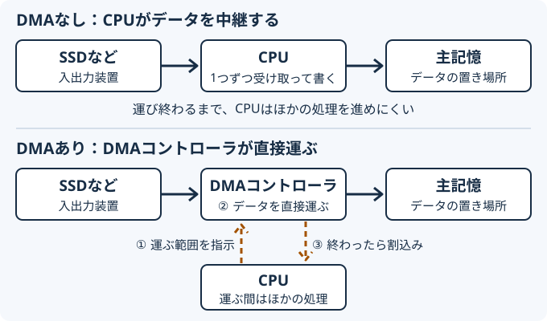
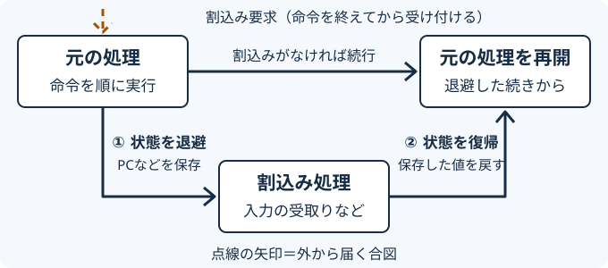

このページで学ぶこと
- ポーリング・割込み・DMAの違いを説明できる。
- 割込みの前にPCなどを退避する理由を説明できる。
- CPUが入力を待つ間に何をしているかを、操作で比べられる。
- 外部割込みと内部割込みの例を分類できる。
1.まずイメージを掴む
入出力装置とは：CPUと主記憶の外にある、データの出入口
Lesson 04・05では、CPUと主記憶の中でデータが動く様子を見ました。しかし、キーで打った文字や、画面に出す絵は、CPUと主記憶の外とやり取りする必要があります。このやり取りをする機器を入出力装置と呼びます。
| 分類 | 例 | データの向き |
|---|---|---|
| 入力装置 | キーボード、マウス、カメラ | 外からコンピュータへ入れる |
| 出力装置 | ディスプレイ、プリンタ、スピーカ | コンピュータから外へ出す |
| 入出力の両方 | SSD、LANアダプタ（ネットワークへの接続部品） | 受け取りも送り出しもする |
SSDはLesson 05で「保存場所」として学びました。CPUから見ると主記憶の外にあるデータの出し入れ先なので、キーボードなどと同じ入出力の仕組みで扱います。
入力を待つ間、CPUはどうする？
CPUはとても速く動くため、主記憶やSSD、人の操作を待つ時間は、CPUから見ると非常に長くなります。どのくらい違うのか、数字で比べてみましょう。
| 何をするか | かかる時間の目安 | CPUの1回の動作の何倍か | 1回の動作を1秒に置き換えると |
|---|---|---|---|
| CPUの1回の動作 （3GHzの1クロック） | 約0.3ナノ秒 | 1倍 | 1秒 |
| キャッシュ（L1）から読む | 約1ナノ秒 | 約3倍 | 約3秒 |
| 主記憶から読む | 約100ナノ秒 | 約300倍 | 約5分 |
| SSDから読む | 約0.1ミリ秒 （100マイクロ秒） | 約30万倍 | 約3.5日 |
| 人が次のキーを押すまで | 約0.2秒 | 約6億倍 | 約19年 |
1ナノ秒は10億分の1秒、1マイクロ秒は100万分の1秒、1ミリ秒は1000分の1秒です。数値は桁の違いをつかむための目安で、製品や条件によって変わります。SSDは高速な製品（NVMe接続）の読出しを想定しています。
CPUの1回の動作を1秒とすると、主記憶を待つのは約5分、SSDを待つのは約3.5日、人のキー入力を待つのは約19年です。キーを1回待つ間に、CPUは数億回も動作できます。その間ずっと「届いた？」と確認し続けるか、ほかの仕事を進めるかで、CPUの使い方が大きく変わります。
宅配便を待っている日を考えます。届いたかどうかを何度も玄関まで見に行くと、そのたびに家の作業が止まります。チャイムが鳴ってから出れば、それまで自分の作業を続けられます。
見に行く方式と、知らせてもらう方式
ポーリング：CPUがキーボードなどの入出力装置へ「届いた？」と繰り返し確認する方式です。玄関を何度も見に行く待ち方です。
割込み：キーボードなどの入出力装置の側から、CPUへ合図（割込み要求）を送る方式です。チャイムが鳴ってから出る待ち方です。
どちらも、入力を受け取るのはCPUです。違うのは、届いたことにどうやって気付くかです。
2.仕組みを理解する
入出力の3つの方式：気付き方と運び方
| 方式 | 仕組み | CPUへの影響 |
|---|---|---|
| ポーリング （プログラム制御） | CPUがキーボードなどの状態を繰り返し確認する | 確認するたびにCPUの時間を使う。間隔を空けると、気付くのが遅れる |
| 割込み | キーボードなどの入出力装置が、割込み要求という合図でCPUに知らせる | 待つ間は別の処理を進められる |
| DMA | DMAコントローラ（データ運搬専用の回路）が、SSDなどの入出力装置と主記憶の間でデータを直接運ぶ | CPUは運ぶ範囲を指示するだけ。運び終わりは割込みで知る |
ポーリングと割込みは「届いたことにどう気付くか」の違いです。DMAは「データを誰が運ぶか」の違いです。DMAも、運び終わったことを割込みでCPUに知らせます。
DMA：データ運びを専用の回路に任せる
SSDからファイルを読み込むとき、運ぶデータは数千〜数百万バイトにもなります。DMAを使わない場合、CPUが入出力装置からデータを受け取り、主記憶へ書く作業を何度も繰り返します。運んでいる間、CPUはほかの処理を進めにくくなります。
DMA（Direct Memory Access：直接メモリアクセス）は、この運搬をDMAコントローラに任せる方式です。DMAコントローラは、PCの基板上の部品や、SSD・LANアダプタなどの入出力装置の中に組み込まれた回路です。CPUのようにさまざまなプログラムを実行するのではなく、「どこから・どこへ・どれだけ運ぶか」の指示どおりにデータを運ぶことだけを担当します。

- CPUがDMAコントローラへ、運ぶ元・運ぶ先の番地・量を指示する。
- DMAコントローラが、入出力装置と主記憶の間でデータを直接運ぶ。その間、CPUはほかの処理を進める。
- 運び終わると、DMAコントローラが割込みでCPUに知らせる。
たとえるなら、引っ越しの運送業者
段ボールを自分で1箱ずつ運ぶと、その間ほかのことができません。運送業者に「この部屋の荷物を、あの部屋へ全部」と頼めば、自分は別の作業ができ、終わったら連絡がもらえます。CPUが依頼主、DMAコントローラが運送業者です。
割込みが来たら、戻り先を覚えてから出かける
割込み要求が来ても、CPUはその瞬間に処理を投げ出しません。実行中の命令を終えてから受け付けます。そのあと、元の処理へ戻れるように準備します。

- 割込み要求を受け付ける（実行中の命令は終えてから）。
- 退避：PC（次に実行する命令の場所）などの値を、決まった場所へ保存する。
- PCを割込み処理の命令へ切り替え、割込み処理（入力の受取りなど）を行う。
- 復帰：保存しておいた値をPCなどへ戻す。
- 元の処理を、中断した続きから再開する。
Lesson 04で学んだとおり、PCは「次に実行する命令の場所」です。PCを保存せずに割込み処理へ切り替えると、どこまで進んだか分からなくなります。退避は、元の処理の続きを失わないための手順です。
割込みには、外から来るものと中から起こるものがある
| 種類 | きっかけ | 例 |
|---|---|---|
| 外部割込み | 実行中のプログラムの外の出来事 | 入出力の完了（キー入力が届いた）、タイマによる一定時間の経過、電源異常やハードウェア障害（機械チェック） |
| 内部割込み | 実行中のプログラムの命令そのもの | ゼロで割る・桁あふれなどの演算の異常、不正な命令、OSの機能の呼出し（SVC）、ページフォールト |
見分けるときは、今実行している命令が原因かどうかを考えます。ゼロで割る命令を実行したなら、原因はプログラムの中にあるので内部割込みです。キーが押されたのは、プログラムの外の出来事なので外部割込みです。
試験用語：SVC・ページフォールト・タイマ割込み
- SVC（スーパバイザコール）：プログラムが、ファイルの読込みなどOSの機能を呼び出すときに使う割込みです。プログラム自身の命令で起こすので内部割込みです。
- ページフォールト：必要なデータが主記憶にないときに起こる割込みです。Lesson 09「仮想記憶」で詳しく扱います。
- タイマ割込み：タイマ（一定時間ごとに合図を出す回路）からCPUへ送られる合図です。OSが複数のプログラムを順に実行する仕組みで使います（Lesson 08「スケジューリング」）。
セキュリティとのつながり：DMAとデバイスドライバ
入出力装置を動かすには、OSに組み込むデバイスドライバというソフトウェアを使います。USB機器を接続すると、OSが対応するドライバでその機器を制御します。
DMAはCPUを通さずに主記憶へ読み書きできます。そのため、悪意のある周辺機器がDMAで主記憶の内容を盗み見たり書き換えたりする攻撃が知られています。OSやハードウェアは、周辺機器が読み書きできる主記憶の範囲を制限する仕組み（IOMMUなど）で対策します。
3.触ってみる
このLabで確かめること
キーを待っている間に計算を進めることと、キーが押されたらすぐ気付くことを、両立できるかどうかを比べます。3つの方式を同じ時間の流れに並べて、同時に進めます。3つの行は、どれも同じ1台のCPUです。違うのは、キーの待ち方だけです。
- CPUの仕事：キー入力の受取りと、たまっている計算です。計算はキー入力を使わない別の仕事なので、いつでも進められます。
- 目標：キーが押されたら、できるだけ早く受け取る（人を待たせない）。そのうえで、計算もできるだけ進めたい。
- ポーリング（確認だけ繰り返す）：待つ間は「押された？」の確認だけを繰り返します（ビジーウェイト）。すぐ気付けますが、待つ間はほかの仕事が進みません。確認を最大まで増やした極端な例です。
- ポーリング（3単位ごとに確認）：計算を2個進めるごとに見に行きます。計算は進みますが、確認の合間に押されると、気付くのが遅れます。
- 割込み：押されるとキーボードが合図を送ってくれます。合図が来るまで、見に行かずに計算を進められます。
進め方
- 「1単位進める」を数回押し、キーを押す前の3つの行を比べる。
- 「キーを押す」を押し、続けて「1単位進める」を押して、各行がいつ受け取るかを確かめる。
- 押すタイミングを変えて何度か試し、「進んだ計算」と「受け取るまで」を比べる。
計算を進めながら、キーにすぐ気付けるのはどれ？
予想：計算をたくさん進めながら、キーが押されたらすぐ受け取れるのは、3つのうちどの方式でしょうか？
- 確認：見に行っただけ（仕事は進まない）
- 計1・計2…：計算（仕事が進む）
- 受取：キーを受け取る（割込みは退避・受取・復帰を1枠に）
- ▲キー：キーを押した時点
1枠＝1単位は実験用の目盛りです。実際には、人がキーを押す間隔はCPUの1回の動作の数億倍です（「1. まずイメージを掴む」の表）。確認1回や、割込みの退避・復帰は、それに比べてごく短い時間です。このLabでは見やすくするため、どれも1枠で表しています。
確認の間隔の決め方と、確認だけを繰り返す待ち方が使われる場面
ポーリングでは、確認の間隔を短くするほど早く気付けますが、確認の回数（無駄）が増えます。長くするほど無駄は減りますが、気付くのが遅れます。実際には、相手の装置の速さや、どこまで遅れてよいかで間隔を決めます。試験でいう「周期的に状態を調べる」は、このように間隔を決めて確認する方式です。
一方、数マイクロ秒で終わるような非常に短い待ちでは、割込みの退避・復帰の手間を避けるため、あえてポーリングで待つこともあります。どちらが常に優れているというより、待ち時間の長さで使い分けます。
確認だけを繰り返す待ち方（ビジーウェイト）が使われるのは、次のような場面です。
- 待ち時間がごく短いとき：数マイクロ秒で終わる装置を待つ場合など。割込みの退避・復帰より、確認を繰り返すほうが速いことがあります。
- ほかに仕事がない小さな機器：家電を制御するマイコンなど。CPUを空けても使い道がないので、確認だけを繰り返しても損がありません。
- 高速通信の専用処理：大量の通信を処理するサーバで、CPUのコアを1つ通信の確認専用に割り当てることがあります。
反対に、パソコンで人のキー入力を待つときには使いません。数億回分の動作が確認だけで消えてしまうからです。
このLabの簡略モデルについて
割込みの退避・受取・復帰を1枠にまとめています。実際には、PCのほか計算途中の値を持つレジスタなども退避します。退避と復帰の流れは「2. 仕組みを理解する」の図で確認してください。キーは押した時刻の終わりに届き、次の枠以降で処理するものとします。3単位ごとのポーリングは時刻3・6・9・12に確認します。複数の割込みが重なる場合の優先順位や、DMAはこのLabでは扱いません。
4.試験ではこう問われる
「内部割込みに該当するものはどれか」
選択肢を1つずつ、実行中の命令が原因かどうかで分けます。
- ゼロで割る命令を実行した → 命令が原因なので内部割込み
- キーボードからの入力が完了した → キーボードで起きた出来事なので外部割込み
- タイマが一定時間の経過を知らせた → タイマからの合図なので外部割込み
- 電源電圧が異常に下がった → ハードウェアの出来事なので外部割込み
タイマ割込みは外部割込み：「時間が来た」はプログラムの命令ではなく、タイマという回路からの合図です。OSが使う仕組みでも、きっかけは外にあります。
方式の説明を選ぶ問題
「CPUを介さずに、入出力装置と主記憶の間でデータを転送する」はDMAです。「CPUが周期的に入出力装置の状態を調べる」はポーリングです。「入出力装置などからの要求で、実行中の処理を中断して別の処理を行う」は割込みです。
割込み処理の手順では、中断した処理を再開するために、PCなどの状態を退避することが問われます。退避しなければ、元の処理の続きが分からなくなります。
5.確認問題
全4問です。理由も読み、待ち方と割込みの種類を確かめましょう。
教材用のオリジナル問題です。4問すべて回答すると直近の成績を記録します。
0 / 4問回答
学習を振り返る
ポーリングと割込みで、待つ間のCPUの使い方がどう違うか説明できそうでしょうか。退避と復帰の理由、外部割込みと内部割込みの分け方も確かめてください。次は、OSが複数の処理をどう管理するかを学びます。
理解できたら学習完了を記録してください。確認問題の全問正解は条件ではありません。いつでも未完了に戻せます。